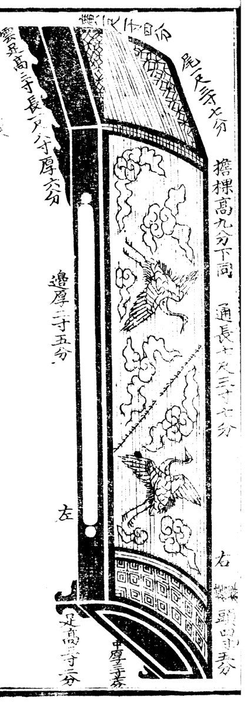

Akhak gwebeom: a 1493 picture book of instruments, and what came after
What this page looks at. The 64 entries — 58 instruments and 6 ritual objects such as banners and dance implements — that the 1493 Akhak gwebeom (樂學軌範, “Guide to the study of music”) set down in pictures and measurements: how they are used today, and how the book itself was printed again and again.
What we see. Of the 58 instruments, 17 are still performed, 17 are used only in rituals and 14 are classed “record only” (present use not confirmed). The other 10 are classed “restored or reconstructed,” or could not be confirmed.
A caution. “Record only” only means that present use was not confirmed. It does not tell us whether use stopped, when, or that the instrument is used nowhere today.
1. One book, printed more than once#
The book was not printed once in 1493 and left at that. It was cut again after the Japanese invasions of the 1590s; in 1655 the court approved a request to print from those blocks; and by 1743 a copy appeared with new texts and a picture added at the front. That is why a picture from the book should always be cited with its edition.
| When | What | Evidence |
|---|---|---|
| 1493 | Compiled by Seong Hyeon (成俔) and others on royal command | Date of the preface |
| Before the 1590s war | A copy said to be held by the Hōsa Bunko (蓬左文庫), Nagoya | Jangseogak catalogue note copy not yet seen |
| 1610 | Blocks cut again; copy granted to the Taebaeksan archive | Gift note, printing note |
| 1655 | Request to print from those blocks for the archives, approved | Veritable Records of King Hyojong, 6th year, 3rd month, 8th day |
| 1743 | A copy with eighteen pages of Yeongjo-era texts and a picture added | Dated text |
| A gyeongja year | A second volume inscribed 庚子六月日新備 (the gyeongja copy) | Inside front cover, Jangseogak library |
| 1933 | Facsimile by the Gojeon Ganhaenghoe, Gyeongseong (Seoul) | Colophon |
- Apart from its eighteen added pages, the pages we compared in each of the three volumes of the 1743 copy correspond in layout to the 1610 edition. The end of its third volume still carries the 1610 printing note 萬曆三十八年庚戌仲秋 日 (mid-autumn, that is the eighth lunar month, of 1610).
- Between 1610 and 1933 the gyeongja years are 1660, 1720, 1780, 1840 and 1900; which one is meant is unknown. The inscription (“newly provided, sixth month, gyeongja year”) records that the copy was newly provided; it does not give a printing date.
- The 1743 copy and the gyeongja copy may also have been printed from the 1610 blocks, but we have not confirmed it. Matching layout is not enough; that would take comparing cracks and broken strokes in the blocks, one by one.
- The colophon of the 1933 facsimile gives March 25, 1933 (printed) and March 28 (published), and names its source as 京城帝國大學御藏本(舊奎章閣本) — the former Kyujanggak copy, which carries the 1610 Taebaeksan gift note. A facsimile is a photographic reprint; the Jangseogak catalogue note (haeje) is the descriptive note the library writes for each item.
Four dates in the sources
1493 · end of Seong Hyeon’s preface
弘治六年癸丑八月上澣
First ten days of the eighth month, gyechuk year, sixth year of Hongzhi (1493).
1610 · gift note on the second page of the 1933 facsimile
萬曆三十八年十月 日 內賜太白山樂學軌範一件
Tenth month of the 38th year of Wanli (1610): one copy of Akhak gwebeom granted to the Taebaeksan archive.
1655 · Veritable Records of King Hyojong, the Minister of Rites Yi Hu-won
壬辰亂後, 掌樂院開刊, 而板本在本院。 請令校書館印出累件, 分藏史庫。
After the Imjin war the Royal Music Office cut the blocks, and the blocks are kept there. We ask that the Office of Printing be ordered to print several copies and store them in the history archives.
The king agreed. The record gives the request and the approval; it does not say how many copies were printed. In the same remarks the minister called it “a book not found in private homes,” and said that all the music in the courtyard of the ancestral shrine followed its rules. The Royal Music Office (掌樂院) ran court music, the Office of Printing (校書館) printed books, and the history archives (史庫) kept the dynastic records and other valuable books.
1743 · end of the eighteen added pages
皇朝紀元後百十有六年癸亥九月十六日
Sixteenth day of the ninth month, gyehae year, the 116th year from the epoch of the imperial (Ming) dynasty (1743).
The “imperial epoch” counts from the first year of Chongzhen (崇禎), the last Ming reign era, 1628. Counting 1628 as the first year, the 116th is 1743.
2. The nine books#
The nine books run from the theory of sound, to how ensembles are set out, to court dance, to pictures. Of the 402 pages of the main text, 150 fall in books 6–8, which carry the pictures of instruments, ritual objects and costumes.
Pages per book in Akhak gwebeom
The length of each bar compares how many pages each of the nine books has.
- Books 6–8 (the books of pictures of instruments, ritual objects and costumes)
- Other books
In short The longest, book 7 (64 pages, Tang and native instruments), and the shortest, book 3 (18 pages, Goryeo court dances), differ by 46 pages. Together the picture books 6–8 have 150 pages, about 37% of the 402 pages of the main text.
How the chart works Each bar is one book. The horizontal scale is the number of pages; a longer bar means the book has more pages. The number at the end of a bar is its page count. Books 6–8 are drawn in a different color, as in the key above. On narrow screens the book names sit above the bars.
Reading one value The 64 at the end of the bar for book 7 means that book 7 runs from page 1 to page 64 of the third volume of the 1743 copy: 64 pages.
The numbers Grouped by volume: first volume (books 1–3) 130 pages; second volume (books 4–6) 138 pages; third volume (books 7–9) 134 pages.
Easy to misread A page count does not measure how important a book is, or how many pictures it has. The color only marks books 6–8; it does not mean the other books have no pictures. Pages are counted from the first to the last page of each book, leaving out the preface, table of contents and postface but including blank pages at the end of a book. The page numbers are those of the 1610 edition (1933 facsimile) for books 1–3, of the second volume of the 1743 copy for books 4–6 (the same as the 1610 edition), and of the third volume of the 1743 copy for books 7–9; whether books 7–9 have the same page numbers in the 1610 edition has not been checked. The 1743 copy has eighteen more pages, all in its first volume; they come before book 1 and belong to no book, so they are not in the bars.
Terms Books and volumes: the nine books (gwon 卷) are bound in three volumes (chaek 冊): first volume, books 1–3; second volume, books 4–6; third volume, books 7–9. Jeongjae (呈才): song-and-dance pieces performed at court banquets.
| Book | Volume | Subject |
|---|---|---|
| 1 | first | Theory of pitch — the twelve pitches (律呂), the system of sixty modes, and the “eight sounds” (instruments sorted by eight materials) |
| 2 | first | Seating of ensembles — which instruments go where, and how many, for each rite |
| 3 | first | Goryeo-dynasty court dances (jeongjae 呈才, song-and-dance pieces performed at court banquets) recorded in the History of Goryeo |
| 4 | second | Tang-style court dances then in use (of Chinese origin, and pieces created in Korea in that form) |
| 5 | second | Native court dances then in use |
| 6 | second | Pictures of ritual (a-ak) instruments, with the banners and implements of ritual dance |
| 7 | third | Pictures of Tang-derived and native instruments |
| 8 | third | Pictures of props, costumes and instruments used in court dances |
| 9 | third | Dress of musicians, dancing boys and female entertainers |
3. The 64 entries today#
Most of the 38 ritual (a-ak) instruments are used only in rituals (17) or are classed “record only” (12, present use not confirmed); 4 are still performed and 5 could not be confirmed. Of the 20 Tang-derived and native instruments, 13 are still performed.
How the 64 entries pictured in Akhak gwebeom (1493) are used today
The color of each cell shows how one of the 64 entries pictured in the book is used today. The eight thick-dotted cells at the bottom are instruments outside the 64.
- green · Still performed 17
- blue · Used only in rituals 17
- ocher · Restored or reconstructed 4
- gray · Record only (present use not confirmed) 14
- light brown · Ritual object (not an instrument) 6
- hatched · Not confirmed (including no encyclopedia entry) 6
- thick dotted · Outside the 64 · status not surveyed 8
A-bu — ritual (a-ak) instruments (book 6) 38
- 編鐘pyeonjong
- 編磬pyeongyeong
- 節鼓jeolgo
- 笙saeng
- 特鐘teukjong
- 特磬teukgyeong
- 靈鼓yeonggo
- 靈鼗yeongdo
- 路鼓nogo
- 路鼗nodo
- 晉鼓jingo
- 柷chuk
- 敔eo
- 籥yak
- 簫so
- 篴jeok
- 篪ji
- 缶bu
- 壎hun
- 瑟seul
- 琴geum
- 朔鼓sakgo
- 應鼓eunggo
- 雷鼓noego
- 雷鼗noedo
- 應eung
- 雅a
- 相sang
- 牘dok
- 錞sun
- 鐲tak
- 鐃yo
- 鐸tak
- 建鼓geongo
- 鼗do
- 管gwan
- 竽u
- 和hwa
Dang-bu — Tang-derived instruments (book 7) 13
- 方響banghyang
- 杖鼓janggo
- 拍bak
- 奚琴haegeum
- 牙箏ajaeng
- 洞簫tungso
- 唐觱篥dangpiri
- 太平簫taepyeongso
- 月琴wolgeum
- 唐琵琶dangbipa
- 大箏daejaeng
- 唐笛dangjeok
- 敎坊鼓gyobanggo
Hyang-bu — native instruments (book 7) 7
- 玄琴hyeongeum
- 伽倻琴gayageum
- 大笒daegeum
- 鄕觱篥hyangpiri
- 草笛chojeok
- 鄕琵琶hyangbipa
- 小管子sogwanja
Ritual objects — banners and dance implements (book 6) 6
- 旌jeong
- 纛duk
- 麾hwi
- 羽籥uyak
- 干戚gancheok
- 照燭jochok
Book 8 court-dance and military instruments — outside the 64 8
- 牙拍abak
- 響鈸hyangbal
- 舞鼓mugo
- 銅鈸dongbal
- 大角daegak
- 螺na
- 大鼓daego
- 大金daegeum
In short Of the 17 green cells (still performed), 13 are among the 20 Tang-derived and native instruments. Of the 38 ritual (a-ak) instruments, 29 are blue (used only in rituals, 17) or gray (record only, 12), and 4 are green.
How the chart works Each cell is one pictured entry: the name in Chinese characters above, its romanization below. The color is a present status that this page assigns to each cell, one per cell, on the basis of the wording of the National Gugak Center’s encyclopedia of Korean traditional music (consulted November 19, 2026). The 6 light-brown ritual objects are colored separately because they are not instruments. Hatched cells are those for which the encyclopedia has no entry under that name (3) or whose status could not be confirmed from its wording (3). Thick-dotted cells lie outside the 64, and their present status was not surveyed. The groups are the three sections (bu) a-bu, dang-bu and hyang-bu, the ritual objects, and the group of book 8 instruments outside the 64. The colored and hatched cells add up to 64; the 8 thick-dotted cells are counted separately. Each group’s total is shown beside its name. Within the 64, cells of the same color in each group are gathered in the order of the key, and within one color they follow the order of the public 64-entry CSV (data/akhak-64-items.csv); the 8 dotted cells follow the order given in the text.
Reading one value “blue · Used only in rituals 17” in the key means that 17 of the 64 cells are blue. All 17 are ritual (a-ak) instruments.
Easy to misread The color is a present status assigned from the encyclopedia’s wording. Whether use stopped after 1493, when, or whether it resumed is not in this chart. The cells are regrouped by color, so they are not in the order of the book. The 6 hatched cells mean “not confirmed,” not “not in use”; for 3 of them the encyclopedia has no entry under that name. “Record only” for the 14 gray cells is a category name that this page’s table gives in condensing the encyclopedia’s wording. It means that present use in performance or rites was not confirmed; that they are used nowhere today has not been checked separately. It says nothing about whether the instrument itself survives (for sakgo and eunggo it does). The 4 ocher cells are classed “restored or reconstructed”; whether they are played today is not shown in this chart. The daegeum (大笒) among the native instruments, a flute, and the daegeum (大金) in the dotted cells of book 8, a gong, share a romanization but are different instruments. Because each cell gets one color, finer qualifications do not show in the color (for example, the geum is blue, but the encyclopedia says it is only set out at rites, not played). On a computer, hover over a cell to see its category and any qualification (condensed from the encyclopedia’s wording, or the search result where there is no entry; ritual objects show the category only). The 64 follow the count of Oh Ji-hye (2019); what one counts as a single entry changes the number of cells.
Terms Entry: a picture with its explanation, set down as one item. Ritual object (儀物): something used in rites, such as a banner or a dance implement, that is not an instrument. A-bu, dang-bu, hyang-bu: the sections for instruments of a-ak (ritual music), dang-ak (traditions that came from China) and hyang-ak (native traditions). Restored or reconstructed: a category name that this page’s table gives in condensing the encyclopedia’s wording; whether each instrument’s tradition was broken, and whether it was restored or reconstructed, is not in the table. Record only: a category given the same way, for entries whose present use was not confirmed.
How many? The 64 follow the count of Oh Ji-hye (2019): 38 ritual, 13 Tang-derived and 7 native instruments, plus 6 ritual objects. The sections (bu, 部) sort instruments by musical tradition; they run across book 6 (ritual instruments and objects) and book 7 (Tang-derived and native). Book 8 pictures further instruments outside that count; we picked eight of them — abak, hyangbal, mugo, dongbal, daegak, na, daego and daegeum — and show them in dotted cells (the small drum drawn with the daego and the small gong sogeum (小金) drawn with the daegeum are counted with them). This daegeum (大金) is a large gong of the jing type, and the sogeum (小金) a small metal gong related to the kkwaenggwari — not the bamboo flutes daegeum (大笒) and sogeum (小笒). The total depends on what one counts as a single entry.
Table of contents and text. The banner jeong (旌) is missing from the table of contents of book 6 but pictured in the text. The harp gonghu (箜篌) appears neither in the contents nor among the illustrated entries of books 6–8 (section 4).
4. Three clocks#
When a document set something down, when an instrument was made and when it came into use do not line up. A picture in a 1493 book does not mean the instrument was played continuously from then on, and absence from the book does not mean the instrument did not exist.
An instrument in the pictures, made again 250 years later
The texts added at the front of the 1743 copy close with these words:
二百五十年後中寢而今復者錄于左以示後
What lapsed in the meantime and is restored now, after 250 years, is recorded on the left to show later generations.
The small characters that follow read:
軌範圖雖有簫八音闕一者久今幸得之仍爲廣製 笙簧製法簧葉付貼亦爲學來廣造以備今番御宴以此用焉
Although the pictures of the Gwebeom include the so (簫), one of the eight sounds had long been missing; now, fortunately, it has been obtained and made in number. The method of making the saenghwang and of fitting its reeds (簧葉: thin metal reeds fitted near the lower ends of the pipes, which vibrate to make the sound) was also learned and brought back, and they were made in number and used at this royal banquet.
The saenghwang (mouth organ) is the instrument that gives the “gourd” (匏) among the eight sounds. The note records that the method of making it was learned and the instruments used at the 1743 banquet. (How to punctuate 雖有簫 is left open; the translation above is one reading.)


Images: woodblock copy of 1743 held by the National Library of Korea; the library viewer marks its rights as “no restrictions on use.”
An instrument missing from the book
The gonghu (箜篌), a harp, is not among the illustrated entries of Akhak gwebeom (books 6–8). Yet it appears in a record about 380 years older. According to the section on instruments newly granted by the Song (宋新賜樂器) in the music treatise of the History of Goryeo, the list of instruments for the new music sent by Emperor Huizong of Song in the sixth month of the ninth year of King Yejong (1114) includes the gonghu:
箜篌四座, 並縷金.
Four gonghu (座 counts instruments), all decorated with gold.
An instrument that reached Goryeo in 1114 is not among the illustrated entries of Joseon’s 1493 picture book. These two records alone cannot tell us when it fell out of use. A search of the Veritable Records of the Joseon Dynasty (original text from the National Institute of Korean History’s public data) also finds no 箜篌.
The same picture, printed differently
Laid page by page against the gyeongja copy, the 56 pages of book 6 match the 1610 edition in layout and main pictures. The visible difference is in the front board of the zither seul (瑟). In the 1933 facsimile of the 1610 edition, fine strings run densely across a cloud-and-crane pattern; in the 1743 copy they appear faint and broken; in the gyeongja copy most of them cannot be seen. Whether the blocks wore down, were recut, or simply took less ink, we cannot yet say.

In this section “lapsed” and “restored” mean that the book says so. When playing actually stopped and started again has to be checked in other records.
In short#
Akhak gwebeom recorded 58 instruments and 6 ritual objects of 1493 in pictures and measurements, and the copies that survive are the edition bearing the 1610 printing note and later printings and facsimiles of it. 17 of the pictured instruments are still performed, but most of the ritual instruments are used only in rituals or are classed “record only.” And a picture in a book is one thing; an instrument in actual use is another.
Sources and method#
- Page images: the 1743 woodblock copy, volumes 天·地·人, National Library of Korea (rights field in the library viewer: “no restrictions on use”); the 1933 Gojeon Ganhaenghoe facsimile of the 1610 edition (copies in the National Library of Korea and the Jangseogak library, Academy of Korean Studies); the gyeongja copy of volume 2 in the Jangseogak library (K3-588). Jangseogak material is credited as “held by the Jangseogak library, Academy of Korean Studies.”
- The 64 entries: Oh Ji-hye (2019), Korean Studies Quarterly 42(2); present status from the National Gugak Center’s encyclopedia of Korean traditional music (consulted November 19, 2026). The 6 ritual objects were classed without an encyclopedia source, and for the 3 entries with no encyclopedia entry under that name the search result is given.
- History of Goryeo and Veritable Records of the Joseon Dynasty: original texts from the National Institute of Korean History’s public data.
- The classical Chinese passages were translated by the author of this page. Hard-to-read characters, and the claims on this page listed in a claim–source table together with designated sample pages, were checked against the sources separately by another AI model; its findings were incorporated.
- The “present status” categories compress the encyclopedia’s wording into one color per cell. Some cases overlap — a ritual instrument may serve at several altars, an instrument may be set out at a rite but not played (陳設) — so each cell takes its most prominent use; ocher (restored or reconstructed) is given to that category whether or not the instrument is played today. The colors are a rough guide; hover over a cell for its category and qualification (for example, the geum is set out at rites but not played; the historical dangjeok is no longer transmitted).